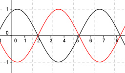

Aufgabe 244 Bestimmen Sie a und c für den dargestellten Graphen der Form y = a * sin (b * (x + c)) + d.  Abgelesen: Periode = 2п (von 2 bis 8,28) --> 2п |b| = ---- = 1 2п Abgelesen: Keine Verschiebung entlang der y-Achse --> d = 0 asin(b(x + c)) Abgelesen: Verschiebung entlang der x-Achse um 2 nach rechts --> c = -2 asin(b(x - 2)) Abgelesen: |a| = 1 Spiegelung an der x-Achse --> a oder b negativ a = -1 und b = 1 y = -sin(x - 2) oder Wegen -sin(x) = sin(-x) gilt auch: a = 1 und b = -1 y = sin-(x - 2) Zum Vergleich: sin(x - 2)